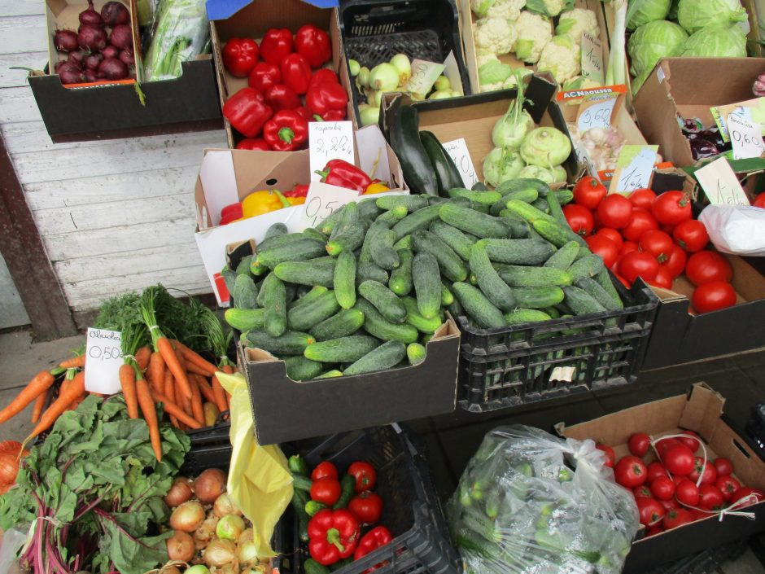

Welcome to daržovės
Orkaitėje keptos daržovės: šiltos ir spalvotos salotos - DELFI Maistas
2020.10.29 08:44
Spalio 29 d., ketvirtadienis | Vilnius 11 Kaunas 10 Klaipėda 10 Šiauliai 9 Panevėžys 10 Alytus 10 Nida 9 Raseiniai 9 Utena 11 Mažeikiai 8 Biržai 10 Kėdainiai 10 Kiti miestai Paieška | Pranešti naujieną | LT RU EN | Reklama Kontaktai | Statistika | + Apie Delfi plius Prisijungti Naujausios Skaitomiausios Lietuvoje Sportas Orai Kriminalai Užsienyje Veidai Horoskopai Gyvenimas Mokslas Verslas Daugiau Sveikata Kultūra Auto M360 Politiko akimis Jaunimas Pilietis Nuomonių ringas Multimedija Teisė Medijos Karas Propaganda PT Melo detektorius Demaskuok Ačiū už pamokas Temos | Delfi Video
Naujienos
Naujausios Skaitomiausios Lietuvoje Sportas Kriminalai Užsienyje Veidai GyvenimasVerslas Mokslas Kultūra Sveikata Auto Pilietis Miestai M360 Politiko akimis
Delfi Video
Tiesioginės transliacijos Delfi Diena Delfi Dėmesio centre LaidosNaudinga
Orai Horoskopai Receptai TV Programa Valiutų kursaiDelfi projektai
Multimedija Idėja Lietuvai Kablys Smalsūs EP Atsakingas požiūris Atgal į gyvenimąDelfi kanalai
Agro Būstas Moterys Šeima Kelionės Grynas Stilius Maistas Letena Karjera Bored Panda Sek DelfiMobilusis Delfi
maistas Šefo virtuvė Gaminu namuose Kepame lauke Skanu Sveika Produktų apžvalgos Kaip tai padaryti? Pasaulio virtuvės namuose Laukinės Žąsys 1000 receptų DELFI maistas Kaip tai padaryti?
Orkaitėje keptos daržovės: šiltos ir spalvotos salotos
(5) valgykimesveikiau.lt 2020 m. vasario 27 d. 16:30Nuorodos kopijavimas
Orkaitėje keptos daržovės: šiltos ir spalvotos salotos
Nuoroda nukopijuota
aA Orkaitėje keptos daržovės yra nuostabiai universalus patiekalas. Tai gali būti ir kaip garnyras prie pagrindinio patiekalo, ir kaip atskiras valgis – tiesiog šiltos ir spalvotos salotos . © Valgykime sveikiau Susiję straipsniai Močiutės bulviniai pyragėliai - kaip vaikystėje (6) Gardieji storuliai lietiniai (10)Kiekviena daržovė turi savą skonį, kurio nesinori užgožti padažais. Natūraliai skanu. Tad valgant kaip salotas, pakanka pašlakstyti aliejumi, jei norisi – džiovintomis ar šviežiomis žolelėmis, keletu lašelių balzaminio padažo. Apibarstyti sėklomis ir riešutais.
Ypač skanu pagardinti fetos sūriu. Kiekvieną kartą galima naudoti vis kitas daržoves – išeis kiti skoniai ir kitos spalvos. Trumpiau tariant, improvizacijoms labai imlus patiekalas.
Norint, kad daržovės gražiai apkeptų, reikėtų nepamiršti, kad:
orkaitė turi būti labai karšta – įkaitinti iki 200 C
daržoves kepimo skardoje išdėstyti vienu sluoksniu, kad kiekvienas gabaliukas gražiai apkeptų
vienu metu kepant skirtingo kietumo daržoves, kietesnes (burokėliai, salierai) pjaustyti mažesniais gabaliukais, minkštesnes (cukinija, moliūgas, svogūnai) – didesniais arba greičiau iškepančias daržoves pašauti į orkaitę vėliau, kai kietosios jau būna kiek iškepusios
prieš kepant kiekvieną gabaliuką išmasažuoti su aliejumi ir užberti pipirų su druska.
ORKAITĖJE KEPTOS DARŽOVĖS
2 burokėliai, priklausomai nuo dydžio supjaustyti į keturias ar daugiau dalių
4 riekės moliūgo
4 morkos, perpjautos išilgai per pusę
2 pastarnokai, perpjauti išilgai per pusę
1 didelis svogūnas, supjaustytas į aštuonias dalis
3 česnako skiltelės, nenuluptos
alyvuogių aliejus
druska ir pipirai
prieskoninės žolelės (raudonėliai, čiobreliai)
Gaminimas:
1. Orkaitę įkaitiname iki 200 C. Į vieną skardą sudedame pjaustytus burokėlius, apšlakstome aliejumi (pakaks 1-2 šaukštų), pabarstome druska ir pipirais, įdedame česnako skilteles (su visa odele lengvai sutraiškytas) ir burokėlių gabaliukus gerai išmasažuojame. Šauname į orkaitę ir kepame apie 15-20 minučių.
2. Į kitą skardą sudedame likusias daržoves, taip pat apšlakstome keliais šaukštais aliejaus, pabarstome druska, pipirais ir prieskoninėmis žolelėmis. Kišame į orkaitę prie jau kepančių burokėlių. Kepame apie 30 minučių, kol daržovės iškepa ir pasidaro minkštos.
Skanaus!
26 PasidalinoNuorodos kopijavimas
Orkaitėje keptos daržovės: šiltos ir spalvotos salotos
Nuoroda nukopijuota
| Populiariausi straipsniai ir video Įvertink šį straipsnį Norėdami tobulėti, suteikiame jums galimybę įvertinti skaitomą DELFI turinį. ( 9 žmonės įvertino) 5.0000 Susiję straipsniai GyvenimasMočiutės bulviniai pyragėliai - kaip vaikystėje (6)
Ar ir jūsų močiutė tokius pyragėlius kepdavo vaikystėje? Neapsakomas gardumas!
GyvenimasGardieji storuliai lietiniai (10)
Šis receptas atsiųstas konkursui „Gardžiausias Užgavėnių patiekalas“ . Dėkojame Oksanai ir...
GyvenimasBulviniai kukuliai (7)
Tokie kukuliai populiarūs Vokietijoje, o Lietuvoje į juos dedamas įdaras ir juos vadiname cepelinais.
GyvenimasSaldžiųjų bulvių blynai
Nežinau kodėl, bet Bubble kitchen rasite nemažai receptų su saldžiomis bulvėmis. Na, taip jau...
GyvenimasKaip pagaminti gardų vegetarišką patiekalą, kad patiktų net mėsėdžiui? (16)
Nors vegetariškas maistas Lietuvoje kasmet vis populiaresnis, jį dažniausiai renkasi tikri...
GyvenimasVeganiškas skanėstas – tofu ir špinatų maltinukai (1)
Laidos „Labas rytas, Lietuva“ rubrikoje „Gardus rytas“ – receptas, skiriamas visiems, kurie...
Išbandykite patys: trys pigūs, tačiau savo skoniu paperkantys receptai iš kiaušinių (2)
Atrodo, kad iškepti kiaušinienę gali net ir visai kojos į virtuvę nekeliantis žmogus, tačiau...
Rauginti kopūstai namie: 2 nesudėtingi receptai (6)
Ar žinote daug produktų, kuriuos dėl naudingų medžiagų gausos noriai valgytų tiek mėsos...
Sena naujai: kaip pasigaminti skanią košę pusryčiams? (6)
Turbūt daugeliui vaikystėje bent kelis kartus iš tėvų ar senelių yra tekę girdėti raginimą...
Rudeninės daržovių ir kruopų sriubos: kuo naudingos ir kaip jas skaniai paruošti 200
Sriuba – sveikas, skanus, lengvas ir organizmą sušildantis maistas. Ne veltui rudenį tautiečiai...
Traškus marinuotas moliūgas per 12 valandų (13) 119
Alfas Ivanauskas parodė, kaip pasigaminti traškų marinuotą moliūgą per 12 valandų.
Top naujienos
LietuvojeDramatiškos nuotaikos Europoje: ateinančias savaites situacija blogės, ir ji visiškai kitokia, nei buvo pavasarį vakcina nėra stebuklas, Kalėdoms gerų naujienų neplanuojama (410)
Naujai koronaviruso bangai skandinant Europą, į pandemijos suvaldymą vis aktyviau bando įsitraukti...
VerslasAntrą bangą išgyvenantys viešbučiai imasi visų išlikimo taktikų: siūlo bekontaktes registracijas ir net prisuka šildymą (74)
Pirmajai koronaviuso bangai smarkiai smogus viešbučių sektoriui, antrosios jie gali ir neatlaikyti,...
UžsienyjeDvi Europos galiūnės grįžta prie karantino: net didžiausi pesimistai to neprognozavo papildyta (79)
Prancūzijos prezidentas Emmanuelis Macronas trečiadienį paskelbė, kad visoje šalyje vėl...
KrepšinisKoronavirusas apsiautė Utenos ir Marijampolės klubus: komandų gretose – 31 atvejis (9)
Antradienį apie du teigiamus koronaviruso testus pranešęs Utenos „Juventus“ klubas susidūrė...
BūstasLietuvos jaunimo požiūris į nuosavą būstą keičiasi: tai vakarietiško mąstymo ar finansinių sunkumų pasekmė? (198)
Vienas pagrindinių NT rinkos variklių – jaunas žmogus, kuris perka pirmąjį savo būstą arba...
LietuvojePrognozuoja, kad Lietuvoje daugės gyventojų: nebėra kam išvažiuoti (130) 158
Komentuodamas pastaraisiais metais Lietuvoje stebimą gyventojų skaičiaus augimą, Visuomenės...
Agnė Vareikaitė | D+ nariamsPrieš ir po: 130 kv. metrų būstą savo rankomis pavertė kai kuo ypatingu
Lietuvę Miglę Rijkhoek, gyvenančią Nyderlanduose, daugelis atrado instagrame . Ši moteris žavi...
SveikataTreneris Pauliukevičius pasakė, kas geriausiai tirpdo kūno riebalus: nereikės nė treniruoklio (71)
Kaip manote, kurie pratimai efektyviausiai degina jūsų kalorijas? Treneris Andrius Pauliukevičius...
VerslasFNTT: nelegaliai automobilius pardavinėjęs telšiškis siunčiamas į teismą (39)
Į Finansinių nusikaltimų tyrimo tarnybos Šiaulių ir Panevėžio apygardos valdybos pareigūnų...
KrepšinisPrancūzija, į kurią iškeliavo „Žalgiris“, stabdo krepšinio čempionatą (36)
Prancūzijos prezidentui Emmanueliui Macronui paskelbus nacionalinį karantiną, dar tą patį...
| Maža didelių žinių kaina Sekite DELFI REKLAMA KONTAKTAI PRIVATUMAS KARJERA en.delfi.lt ru.delfi.lt pl.delfi.lt delfi.ee rus.delfi.ee delfi.lv ru.delfi.lv UAB DELFI Gynėjų g. 16, 01109 Vilnius +37052045400 info@delfi.lt © 1999-2020 DELFI. Visos teisės saugomos .